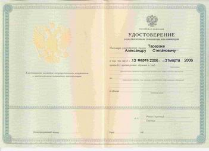

Пермский государственный технический университет
Электротехнический факультет
Кафедра ИТАС, центр УНКИТ
Объявляют очередной набор слушателей на курсы 72-x часовые курсы
повышения квалификации:
- Основы администрирования Интернет-сервера на базе ОС
UNIX
- Основы администрирования UNIX на примере SOLARIS 10
- Основы администрирования СУБД Oracle, уровень 1
- Основы администрирования СУБД Oracle, уровень 2
- Базы данных для web-программирования
- Программирование web-сайтов на языке РНР
- Программирование в системе 1С: Предприятие 8. Вводный
курс
- Системный администратор
По окончании выдается удостоверение государственного
образца о повышении квалификации!
